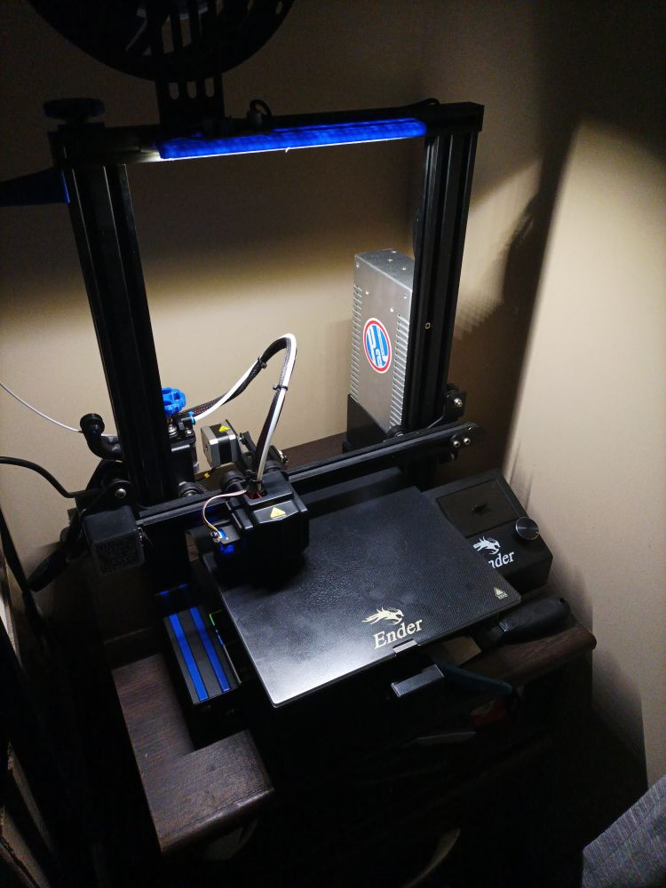

Te llegó la hora, Ender 3
Ya pasó mucha agua debajo del puente y finalmente llegó el día de hacerle un mantenimiento a la impresora 3D. Busqué en internet qué mejoras hay para la impresora, y algo que me gusta de este modelo es que es una de las impresoras de código abierto más vendidas, por lo que hay mods y trucos por toda la web.
Así que manos a la obra, imprimir varias mejor que fui recolectando y de paso, hacemos un mantenimiento general.
Listado de algunos mods que imprimí y coloqué:
- https://www.thingiverse.com/thing:4158561
- https://www.thingiverse.com/thing:4716051
- https://www.thingiverse.com/thing:3176144
- https://www.thingiverse.com/thing:3379068
- https://www.thingiverse.com/thing:3703510
- https://www.thingiverse.com/thing:3289956
- https://www.thingiverse.com/thing:3757210
- https://www.thingiverse.com/thing:3179667
- https://www.printables.com/model/536594-ender-3-neo-screen-cover
- https://www.thingiverse.com/thing:3209211
- https://www.thingiverse.com/thing:3302814

Todos son practicamente plug & play salvo la barra led que llevó su trabajito aparte. Todo (menos la tapa del LCD que me dio paja cambiar de filamento) impreso en PLA azul de Grilon3 para darle un acento a la ender.